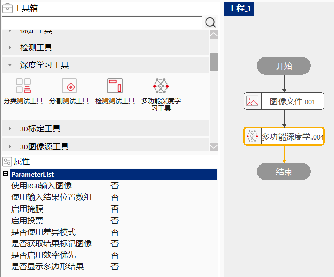
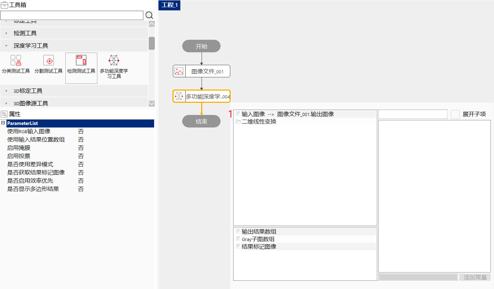
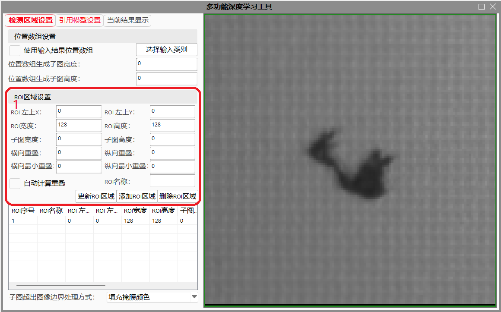
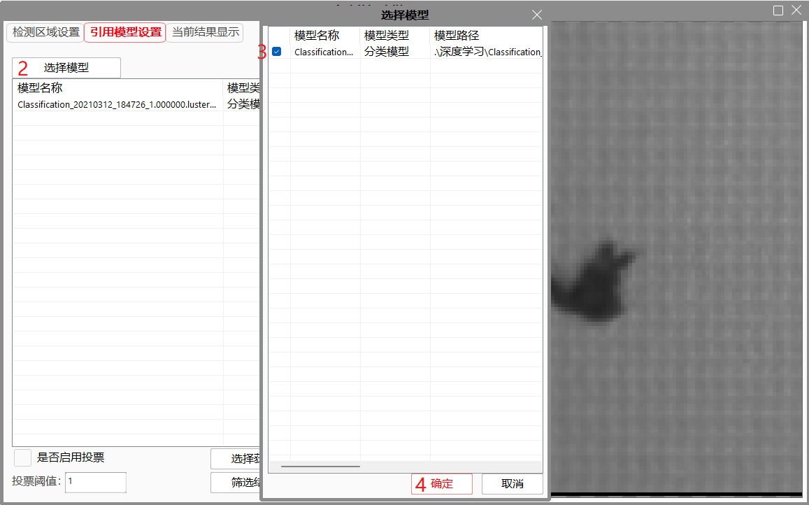
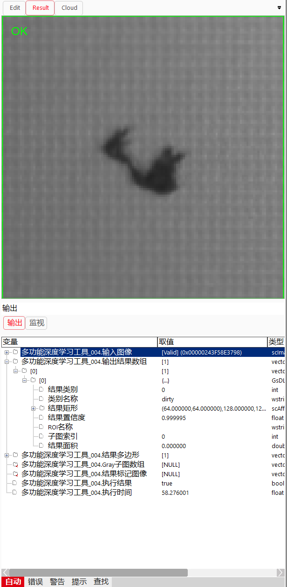
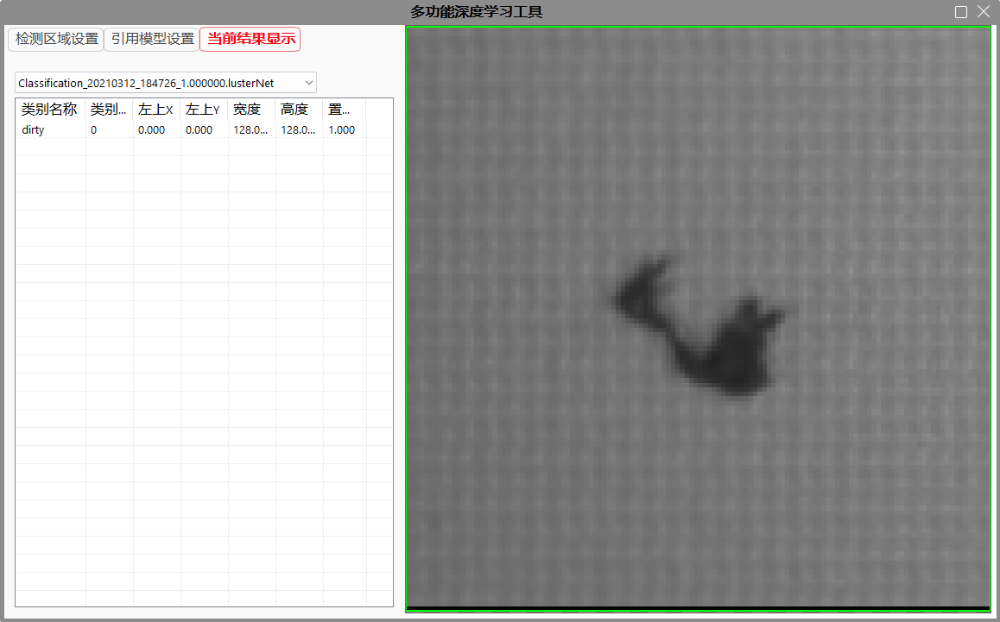
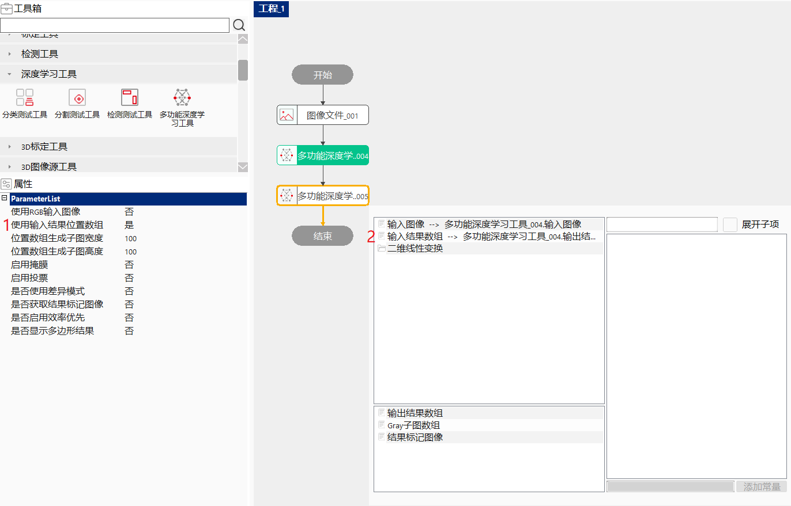
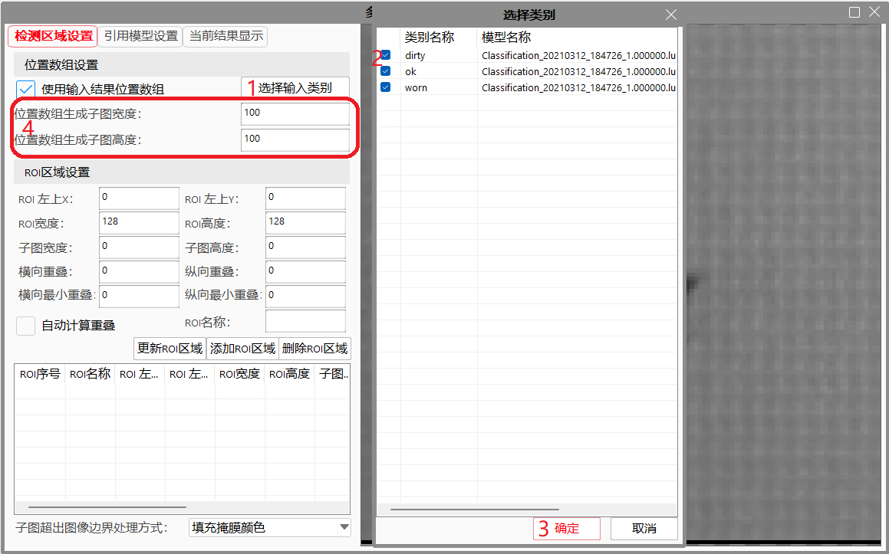
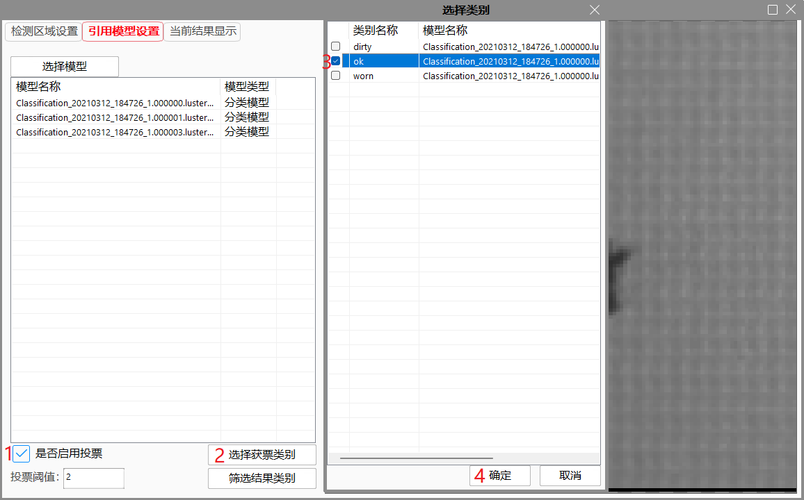
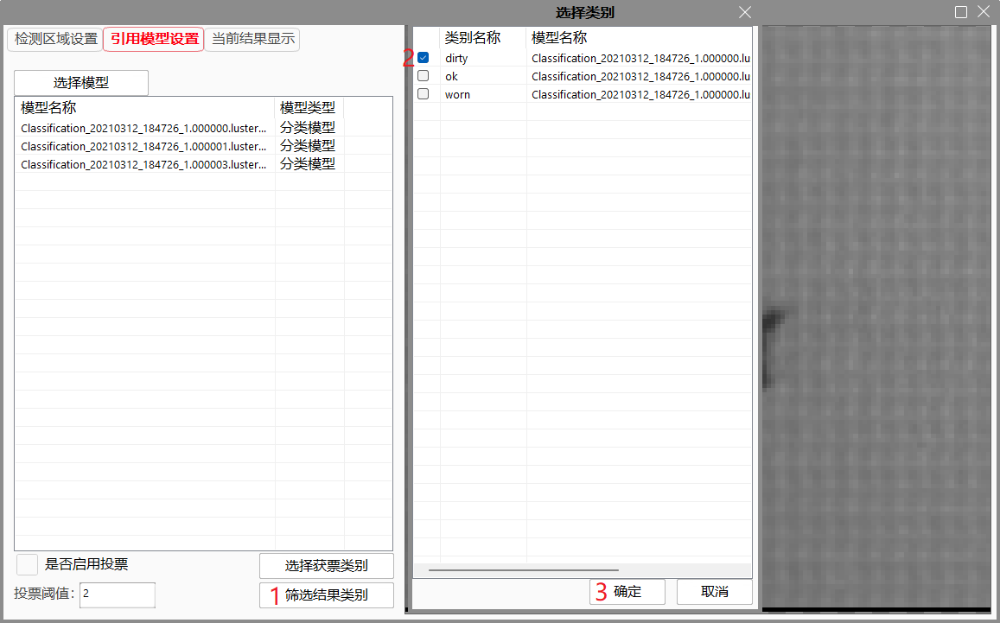

多功能深度学习工具是单一深度学习工具（分类测试工具、检测测试工具、分割测试工具）的扩展版本，除了可以实现单一深度学习工具的功能外，还集成了子图获取功能、掩膜功能，同时支持对切割子图区域使用多个模型同时计算，可以对结果进行并集获取或进行投票操作。工具还支持多个工具间的串联操作，可以将一个工具的输出结果作为另一个工具的输入参数，从而对图片进行更复杂的深度学习计算。


输入所需要ROI信息后，点击添加ROI区域按钮可以添加ROI区域，同时可以在ROI列表和右侧图像展示区域看见所绘制的ROI区域信息和子图区域信息。 可以在列表中或右侧图像显示区域中选中某个ROI区域，ROI区域设置区的相关参数会更新成被选择的ROI区域的相关信息，进行修改后点击更新ROI区域按钮可以将更新后的信息更新到所选ROI区域对象中。 可以在右侧拖动或改变ROI区域的大小，结果会实时更新到ROI区域对象中。 可以选择某个ROI区域，点击删除ROI区域按钮将ROI区域删除。 工具有保护措施，在有图像的情况下，无论怎么绘制，ROI区域不会绘制到图像外部。无图像的情况下，因无法得知图像大小，可以任意绘制ROI区域，故不建议在无图像时对ROI参数进行操作。




可以在高级界面中选择是否使用输入结果位置数组效果同属性中选择使用输入结果位置数组。参数连引入结果数组后，必须成功执行一次被引用的工具，并在工具中选择输入的结果类别，设置子图宽高，工具才可正常执行，可以查看结果位置数组中包含的位置信息，可以修改使用位置数组生成子图的宽度和高度。工具会使用列表中引入结果的每个小区域的中心点为新子图的中心点，使用配置的宽高为新子图的宽高重新切分子图，送给模型进行评估计算处理。
 
可以选择是否启用投票，并设置获票类别和投票阈值。

可以筛选输出的结果类别，无选择则默认全部输出。

| 现象描述 | 解决方法 |
|---|---|
| 获取输入结果数组错误，输入结果数组为空 | 检查参数链中输入的结果位置数组是否正确 |
| 图像掩膜错误 | 检查是否在工具中设置了掩膜信息 |
| 获取子图错误 | 检查当前输入图中的ROI区域是否有效 |
| 调用深度学习算法错误，请检查模型管理器中模型是否初始化成功 | 检查模型管理器中模型是否初始化成功 |
| 调用深度学习算法错误，请检查模型管理器中模型与图像通道是否相同 | 请检查模型管理器中模型与图像通道是否相同 |
| 调用深度学习算法错误，子图队列为空 | 检查是否在工具中添加了ROI区域 |
| 调用深度学习算法错误，计算超时 | 模型评估子图超时，检查模型管理器中模型是否工作正常 |
| 调用深度学习算法错误，模型列表为空 | 检查工具中是否引用模型 |
| 获取输入图像失败，请检查参数配置 | 检查输入图像是否有效 |
| 调用深度学习算法错误，请检查子图宽高是否与模型要求匹配 | 检查输入的图像宽高和通道是否和模型匹配 |
| 参数名称 | 参数说明 |
|---|---|
| 使用RGB输入图像 | “是”：数据链接中显示输入图像RGB参数；“否”：数据链接中显示输入图像参数 |
| 使用输入结果位置数组 | “是”：数据链接中显示输入结果数组参数；“否”：数据链中不显示输入结果数组参数 |
| 位置数组生成子图宽度 | 使用输入结果位置数组的位置信息生成的子图的宽度。 |
| 位置数组生成子图高度 | 使用输入结果位置数组的位置信息生成的子图的高度。 |
| 启用掩膜 | “是”：启用掩膜功能；“否”：不启用掩膜功能 |
| 启用投票 | “是”：启用投票功能；“否”：不启用投票功能 |
| 是否使用差异模式 | “是”：工具内分割模型启用差异分割模式，数据链接中提供背景图像输入；“否”：工具内分割模型启用普通分割模式，参数链中不提供背景图像输入 |
| 是否获取结果标记图像 | “是”：分割模型获取结果标记图像；“否”：分割模型不获取结果标记图像 |
| 是否启用效率优先 | “是”：启用效率优先模式；“否”：不启用效率优先模式 |
| 是否显示多边形结果 | “是”：结果视图中显示多边形结果；“否”：结果视图中显示矩形结果 |
| 参数名称 | 参数说明 |
|---|---|
| 使用输入结果位置数组 | 选中：数据链接中显示输入结果数组参数；非选中：数据链中不显示输入结果数组参数 |
| 选择输入类别 | 选择结果数组中作为输入的类别 |
| 位置数组生成子图宽度 | 使用输入结果位置数组的位置信息生成的子图的宽度。 |
| 位置数组生成子图高度 | 使用输入结果位置数组的位置信息生成的子图的高度。 |
| ROI X | ROI 区域的X坐标 |
| ROI Y | ROI 区域的Y坐标 |
| ROI 高度 | ROI 区域的高度 |
| ROI 宽度 | ROI 区域的宽度 |
| 子图高度 | ROI 区域生成子图的高度 |
| 子图宽度 | ROI 区域生成子图的宽度 |
| 横向叠加 | ROI 区域生成子图时横向叠加 |
| 纵向叠加 | ROI 区域生成子图时纵向叠加 |
| 横向最小叠加 | 自动计算叠加时使用的横向最小叠加参数 |
| 纵向最小叠加 | 自动计算叠加时使用的纵向最小叠加参数 |
| 启用自动计算叠加 | ROI 区域生成子图时是否将使用最小叠加从新计算叠加参数。 |
| ROI名称 | ROI 的名称标识 |
| 子图超出图像边界处理方式 | 子图超出图像边界后的处理方式，分为填充掩膜颜色和退回到图像区域内两种方式。 |
| 模型引用列表 | 工具引用了哪些模型 |
| 启用投票 | 选中：启用投票功能；非选中：不启用投票功能 |
| 选择获票类别 | 如果进行投票操作，结果为获票类别时为真，否则为假。 |
| 投票阈值 | 使用多个模型后可以配置投票阈值，大于等于投票阈值则认为结果为真。 |
| 筛选结果类别 | 非启用投票下可以对结果类别进行筛选，结果数组中只记录筛选后的结果 |
| 参数名称 | 参数说明 |
|---|---|
| 输入图像 | 输入的检测图像 |
| 输出结果数组 | 输出的结果数组信息，按照类别进行分类，包括结果类别、类别名称、置信度、相对于原图的位置信息。 |
| 结果类别 | 类别的索引 |
| 类别名称 | 类别的名称 |
| 结果矩形 | 检测出的目标的左上角点坐标，尺寸 |
| 结果置信度 | 暂无意义 |
| 子图索引 | 子图的顺序索引 |
| 结果面积 | 检测出的目标的面积 |
| 结果多边形 | 输出的多边形集合，内部包含所有结果的多边形信息 |
| 子图数组 | 输出检测时切分的子图集合 |
| 结果标记图像 | 检测获取的结果标记图像 |
| 执行结果 | 工具执行是否成功 |
| 执行时间 | 工具执行耗时 |
| 参数名称 | 参数说明 |
|---|---|
| 输入图像 | 显示输入的检测图像 |
| 输出结果数组 | 显示结果图形 |
| 执行结果 | 显示工具的执行结果 |
参见“\Samples\多功能深度学习工具.gvp”。